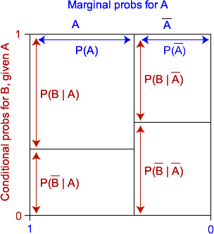

Joint, marginal and conditional probabilities
The conditional probability of \(A\) given \(B\) is defined to be
\[ P(A \mid B) \;=\; \frac {P(A \textbf { and } B)} {P(B)} \]with a similar definition for \(P(B \mid A)\). These equations can be rewritten as:
\[ P(A \textbf { and } B) \;=\; P(A \mid B) \times P(B) \;=\; P(B \mid A) \times P(A) \]The probabilities \(P(A)\) and \(P(B)\) are called marginal probabilities for A and B, whereas \(P(A \textbf { and } B)\) is called their joint probability.
Proportional Venn diagram
The marginal and conditional probabilities can be displayed graphically with a Venn diagram in which one margin is partitioned using the marginal probabilities for \(A\) and the slices are split using the conditional probabilities for \(B\) given \(A\).

When drawn in this way, the areas of the rectangles are equal to the joint probability for the combinations of events, since each area is the product of a marginal probability and the corresponding conditional probability.
The area of any rectangle in the diagram equals the joint probability of the row and column events.
A similar diagram can be based on the marginal probabilities for \(B\) and the conditional probabilities of \(A\) given \(B\), splitting the unit square first horizontally and then vertically. The areas of the resulting rectangles are again equal to the joint probabilities, so the two diagrams are just rearrangements of the same areas.
The use of the diagrams is best explained in an example.
Apple bruising
The contingency table below describes bruising of 96 apples in a packing plant. The apples were classified by the variety of apple (Granny Smith or Fuji) and whether or not they were bruised. (The data are not real.)
| Not bruised | Bruised | |
|---|---|---|
| Granny Smith | 40 | 8 |
| Fuji | 24 | 24 |
The diagram below shows a Proportional Venn diagram for one apple selected at random from this batch. Note that the four areas are proportional to the numbers of apples for each combination of apple type and bruising.